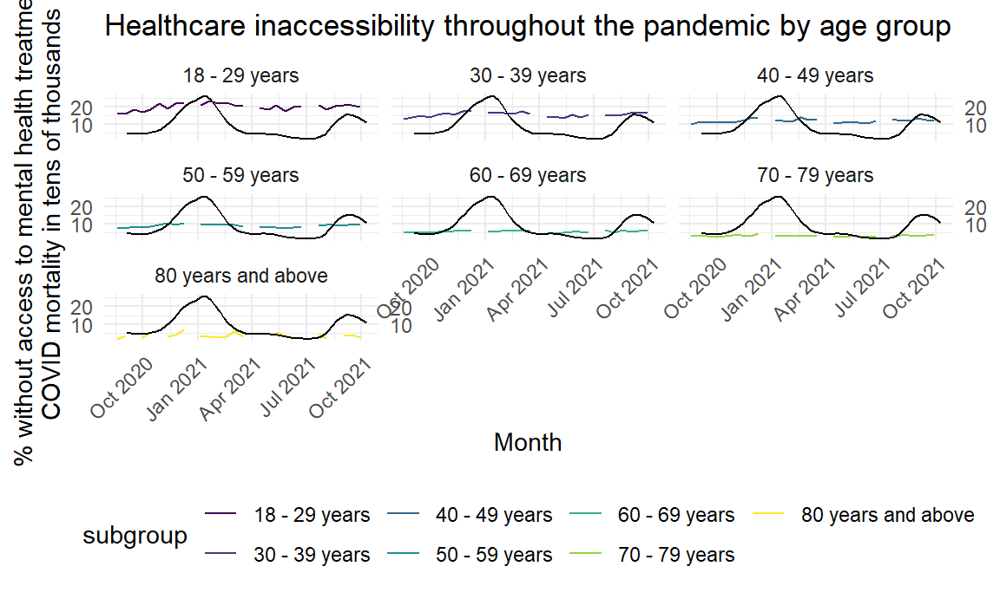
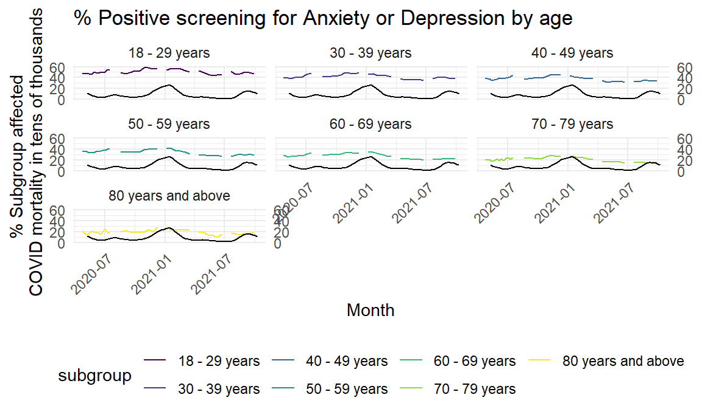

Let’s use plotly to illustrate the following:
The proportion of Americans who were not able to get access to mental health care when they needed it, by age (4x4 facet by age) The proportion of Americans who used pharmaceuticals for their mental health, by age (4x4 facet by age)
4x4 with CIs or one chart with no CI (adding CI might get messy)
Maybe overlay a second set of axes (x2=x1, y2 = COVID count of deaths by end of week) to compare COVID deaths to the mental health status by age?
COVID mortality from Oct 2020 to Oct 2021
cm_df = read_csv("Provisional_COVID-19_Death_Counts_by_Week_Ending_Date_and_State.csv") %>%
janitor::clean_names() %>%
mutate(
start_date = as_date(start_date, format = '%m/%d/%Y'),
end_date = as_date(end_date, format = '%m/%d/%Y'),
) %>%
filter(end_date >=("2020-08-31") & end_date <= ("2021-10-11")) %>%
filter(state == "United States") %>%
filter(group == "By Week")## Rows: 6912 Columns: 17## -- Column specification --------------------------------------------------------
## Delimiter: ","
## chr (8): Data as of, Start Date, End Date, Group, Year, Week Ending Date, St...
## dbl (3): Month, MMWR Week, Percent of Expected Deaths##
## i Use `spec()` to retrieve the full column specification for this data.
## i Specify the column types or set `show_col_types = FALSE` to quiet this message.cm_anxdep_df = read_csv("Provisional_COVID-19_Death_Counts_by_Week_Ending_Date_and_State.csv") %>% #Anxiety survey began earlier
janitor::clean_names() %>%
mutate(
start_date = as_date(start_date, format = '%m/%d/%Y'),
end_date = as_date(end_date, format = '%m/%d/%Y'),
) %>%
filter(end_date >=("2020-05-05") & end_date <= ("2021-10-11")) %>%
filter(state == "United States") %>%
filter(group == "By Week")## Rows: 6912 Columns: 17## -- Column specification --------------------------------------------------------
## Delimiter: ","
## chr (8): Data as of, Start Date, End Date, Group, Year, Week Ending Date, St...
## dbl (3): Month, MMWR Week, Percent of Expected Deaths##
## i Use `spec()` to retrieve the full column specification for this data.
## i Specify the column types or set `show_col_types = FALSE` to quiet this message.z = cm_df %>%
ggplot(aes(x = end_date, y = covid_19_deaths)) +
geom_line()
ggplotly(z)Cleaning Mental Healthcare data, filtering separately by age and state
mh_care_df = read_csv("Mental_Health_Care_in_the_Last_4_Weeks.csv") %>%
janitor::clean_names() %>%
mutate(
time_period_start_date = as_date(time_period_start_date, format = '%m/%d/%Y'),
time_period_end_date = as_date(time_period_end_date, format = '%m/%d/%Y'),
state = as_factor(state),
subgroup = as_factor(subgroup),
group = as_factor(group),
indicator = as_factor(indicator)
)## Rows: 8276 Columns: 15## -- Column specification --------------------------------------------------------
## Delimiter: ","
## chr (10): Indicator, Group, State, Subgroup, Phase, Time Period Label, Time ...
## dbl (5): Time Period, Value, LowCI, HighCI, Suppression Flag##
## i Use `spec()` to retrieve the full column specification for this data.
## i Specify the column types or set `show_col_types = FALSE` to quiet this message.mh_age = c("18 - 29 years", "30 - 39 years", "40 - 49 years", "50 - 59 years", "60 - 69 years", "70 - 79 years", "80 years and above")
mh_age_df = mh_care_df %>% filter(subgroup %in% mh_age) %>%
#filter(indicator %in% "Took Prescription Medication for Mental Health And/Or Received Counseling or Therapy, Last 4 Weeks")
#filter(indicator %in% "Took Prescription Medication for Mental Health, Last 4 Weeks")
filter(indicator %in% "Needed Counseling or Therapy But Did Not Get It, Last 4 Weeks")
#filter(indicator %in% "Received Counseling or Therapy, Last 4 Weeks")
mh_state = c("By Race/Hispanic ethnicity", "United States", "By Disability status", "By Gender identity", "By Age", "By Sex", "By Education", "National Estimate", "By Presence of Symptoms of Anxiety/Depression", "By Sexual orientation")
mh_state_df = mh_care_df %>% filter(group %notin% mh_state) %>%
#filter(indicator %in% "Took Prescription Medication for Mental Health And/Or Received Counseling or Therapy, Last 4 Weeks")
#filter(indicator %in% "Took Prescription Medication for Mental Health, Last 4 Weeks")
filter(indicator %in% "Needed Counseling or Therapy But Did Not Get It, Last 4 Weeks")
#filter(indicator %in% "Received Counseling or Therapy, Last 4 Weeks")Cleaning Anxiety Data
anxdep_df = read_csv("Indicators_of_Anxiety_or_Depression_Based_on_Reported_Frequency_of_Symptoms_During_Last_7_Days.csv") %>%
janitor::clean_names() %>%
mutate(
time_period_start_date = as_date(time_period_start_date, format = '%m/%d/%Y'),
time_period_end_date = as_date(time_period_end_date, format = '%m/%d/%Y'),
state = as_factor(state),
subgroup = as_factor(subgroup),
group = as_factor(group),
indicator = as_factor(indicator)
)## Rows: 8604 Columns: 14## -- Column specification --------------------------------------------------------
## Delimiter: ","
## chr (10): Indicator, Group, State, Subgroup, Phase, Time Period Label, Time ...
## dbl (4): Time Period, Value, Low CI, High CI##
## i Use `spec()` to retrieve the full column specification for this data.
## i Specify the column types or set `show_col_types = FALSE` to quiet this message.anxdep_age = c("18 - 29 years", "30 - 39 years", "40 - 49 years", "50 - 59 years", "60 - 69 years", "70 - 79 years", "80 years and above")
anxdep_age_df = anxdep_df %>% filter(subgroup %in% mh_age) %>%
#filter(indicator %in% "Symptoms of Anxiety Disorder")
filter(indicator %in% "Symptoms of Anxiety Disorder or Depressive Disorder")
#filter(indicator %in% "Symptoms of Depressive Disorder")
anxdep_state = c("By Race/Hispanic ethnicity", "United States", "By Disability status", "By Gender identity", "By Age", "By Sex", "By Education", "National Estimate", "By Presence of Symptoms of Anxiety/Depression", "By Sexual orientation")
anxdep_state_df = anxdep_df %>% filter(group %notin% anxdep_state) %>%
#filter(indicator %in% "Symptoms of Anxiety Disorder")
filter(indicator %in% "Symptoms of Anxiety Disorder or Depressive Disorder")
#filter(indicator %in% "Symptoms of Depressive Disorder")#Date vs subgroup w/ facet w/ CI
mh_age_df %>%
ggplot(aes(x = time_period_start_date, y = value, color = subgroup)) +
geom_line() +
geom_ribbon(aes(ymin=low_ci, ymax=high_ci), linetype=2, alpha=0.1) +
facet_wrap(vars(mh_age_df$subgroup)) +
theme(axis.text.x = element_text(angle = 45, hjust = 1)) +
labs(x = "Month", y = "% Subgroup affected")
#Date vs subgroup, no facets w/ CI
mh_age_df %>%
ggplot(aes(x = time_period_start_date, y = value, color = subgroup)) +
geom_line() +
geom_ribbon(aes(ymin=low_ci, ymax=high_ci), linetype=2, alpha=0.1) +
# facet_wrap(vars(mh_age_df$subgroup)) +
theme(axis.text.x = element_text(angle = 45, hjust = 1)) +
labs(x = "Month", y = "% Subgroup affected", title = "Healthcare inaccessibility throughout the pandemic by age group ")
# mental health availability w/ facet w/o CI w/COVID mort
ggplot() +
geom_line(data = mh_age_df, aes(x = time_period_start_date, y = value, color = subgroup) ) +
geom_line(data = cm_df, aes(x = end_date, y = covid_19_deaths * 0.001) ) +
#geom_ribbon(aes(data = mh_age_df, ymin=low_ci, ymax=high_ci), linetype=2, alpha=0.1) +
facet_wrap(vars(subgroup)) +
scale_y_continuous(breaks = seq(0, 40, 5), sec.axis = sec_axis(trans = ~.*001)) +
theme(axis.text.x = element_text(angle = 45, hjust = 1)) +
labs(x = "Month", y = "% without access to mental health treatment \n COVID mortality in tens of thousands",title = "Healthcare inaccessibility throughout the pandemic by age group ")#ggplotly(g)
## % Screened for Anxiety or Depression by age
ggplot() +
geom_line(data = anxdep_age_df, aes(x = time_period_start_date, y = value, color = subgroup) ) +
geom_line(data = cm_anxdep_df, aes(x = end_date, y = covid_19_deaths * 0.001) ) +
#geom_ribbon(aes(data = mh_age_df, ymin=low_ci, ymax=high_ci), linetype=2, alpha=0.1) +
facet_wrap(vars(subgroup)) +
scale_y_continuous(breaks = seq(0, 80, 10), sec.axis = sec_axis(trans = ~.*001)) +
theme(axis.text.x = element_text(angle = 45, hjust = 1)) +
labs(x = "Month", y = "% Subgroup affected \n COVID mortality in tens of thousands", title = "% Positive screening for Anxiety or Depression by age")We will explore whether there may be differences in the proportion of individuals unable to find mental healthcare.
We use one-way ANOVA because we are comparing within a single categorical variable with more than two levels.
\(H_0\) : There is no difference in accessibility of mental healthcare by states
\(H_1\) : At least two states have unequal access for healthcare
state_means = mh_state_df %>%
select(subgroup, value)%>%
group_by(subgroup) %>%
na.omit() %>%
summarize(mean = mean(value),
se = sd(value)
)
knitr::kable(head(state_means,caption = "Average % incidence of anxiety/depression by State during time period"))| subgroup | mean | se |
|---|---|---|
| Alabama | 11.30741 | 2.082884 |
| Alaska | 11.28519 | 1.912852 |
| Arizona | 11.40741 | 1.680642 |
| Arkansas | 10.85185 | 1.720995 |
| California | 11.56296 | 1.595703 |
| Colorado | 13.15556 | 1.713596 |
Based on the below we conclude with beyond 99.99% confidence that there is unequal access between states and the accessibility of mental healthcare.
anova_state_mh_access = aov(value ~factor(subgroup), data = mh_state_df)
summary(anova_state_mh_access) ## Df Sum Sq Mean Sq F value Pr(>F)
## factor(subgroup) 50 2599 51.98 14.94 <2e-16 ***
## Residuals 1319 4589 3.48
## ---
## Signif. codes: 0 '***' 0.001 '**' 0.01 '*' 0.05 '.' 0.1 ' ' 1
## 7 observations deleted due to missingnessWe do a similar test to see if there are differences between age group and access to care, and reach a similar conclusion:
anova_age_mh_access = aov(value ~factor(subgroup), data = mh_age_df)
summary(anova_age_mh_access) ## Df Sum Sq Mean Sq F value Pr(>F)
## factor(subgroup) 6 6187 1031.2 777.5 <2e-16 ***
## Residuals 177 235 1.3
## ---
## Signif. codes: 0 '***' 0.001 '**' 0.01 '*' 0.05 '.' 0.1 ' ' 1
## 26 observations deleted due to missingness